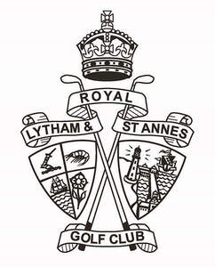

Trade Mark Journal No.2025/041 10 October 2025
UK00004163755 21 February 2025 (18,24,25,39,41,43)

The rights conferred by this registration are personal to the Trustees for the time being of Royal Lytham & St Annes Golf Club and their successors in title and may not be enforced or acquired by any licensee or assignee/transferee of the said Trustees. This limitation shall not restrict the Trustees from permitting third parties to use the mark under contract.
- Class 18
- Golf Umbrellas.
- Class 24
- Textile articles; Towels; banners, flags and pennants; Golf towels.
- Class 25
- Articles of clothing (including footwear and head wear); Golf shirts; Golf caps; Golf shoes; Golf footwear; Golf shorts.
- Class 39
- Rental of motorized golf carts; Operating tours; Arranging tours; Organising tours.
- Class 41
- Golf courses; Golf instruction; Golf tuition; Golf lessons; Organisation of golf tournaments; Organisation of golf competitions; Organisation of professional golf tournaments or competitions; Providing golf facilities; Golf caddie services; Golf driving range services; Provision of golfing facilities; Rental of golf equipment; Fitting of golf clubs to individual users; Organisation of professional golf tournaments or competitions; Golf Club Services.
- Class 43
- Restaurant services.
The Trustees of Royal Lytham & St Annes Golf Club
Representative: WP Thompson